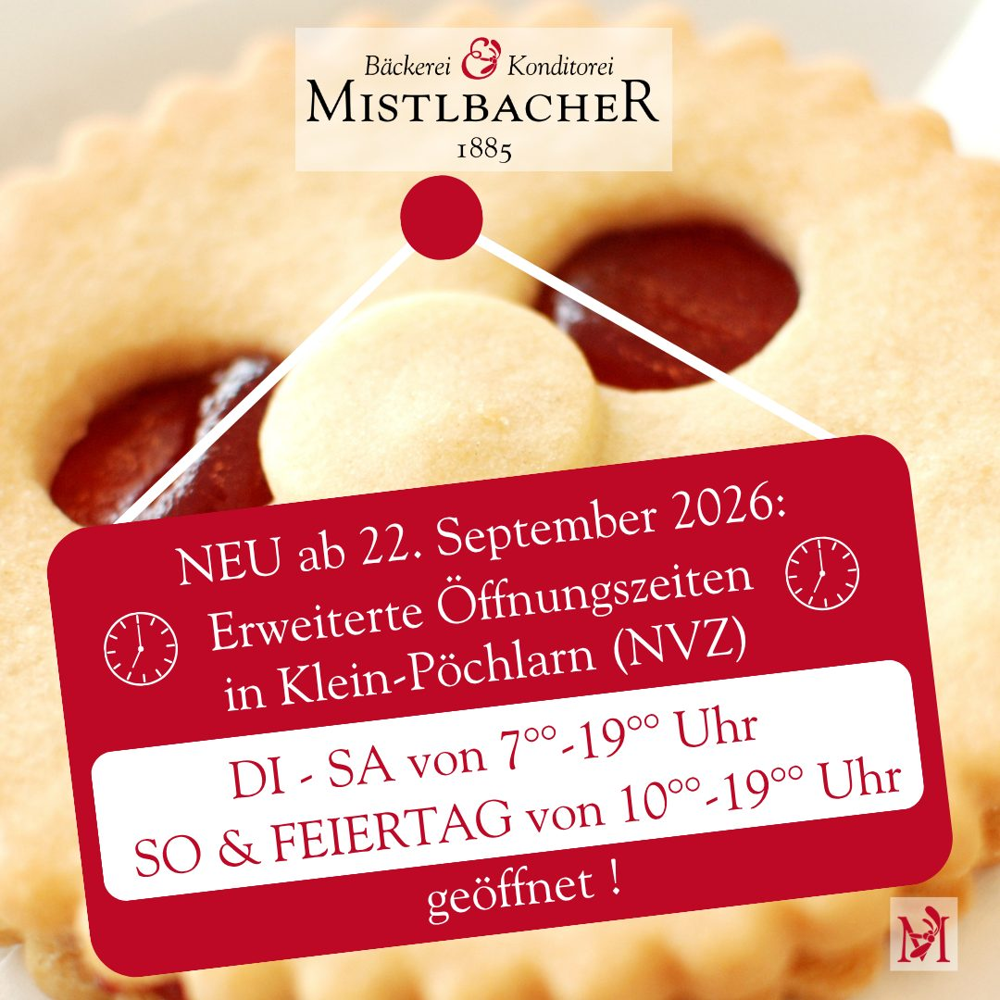
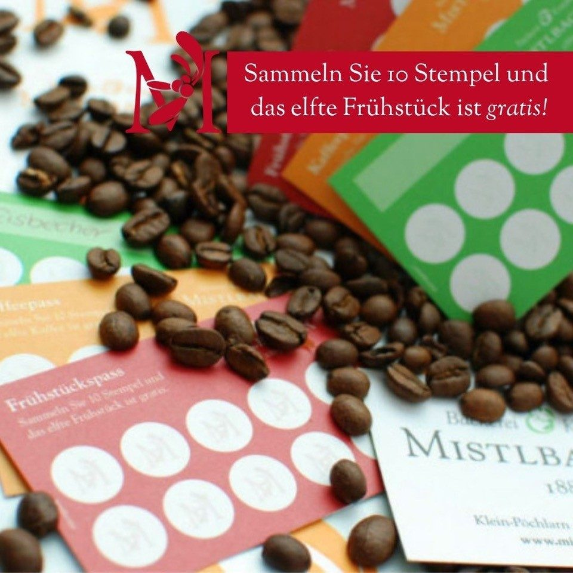
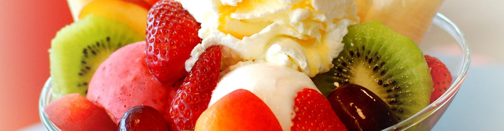
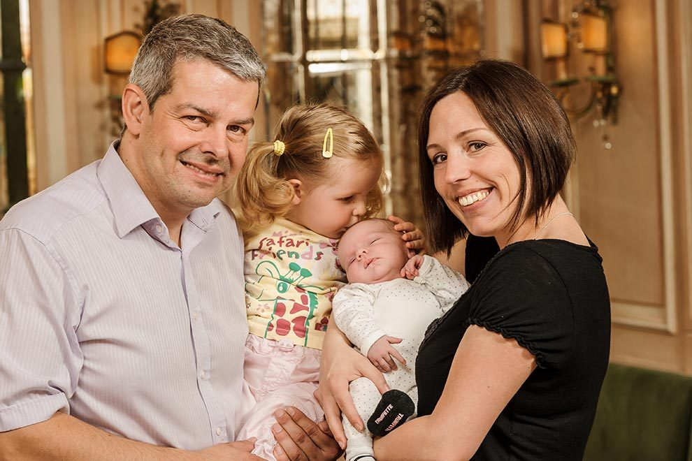

Neu ab 22. September 2026
Erweiterte Öffnungszeiten in Klein-Pöchlarn (NVZ): DI–SA von 7–19 Uhr, SO & Feiertag von 10–19 Uhr geöffnet.
Klein-Pöchlarn · Pöchlarn · Melk an der Donau
Eine familiengeführte Bäckerei und Konditorei in vierter Generation: Der Duft von frischem Brot lockt ab fünf Uhr früh, am Nachmittag wird das Kaffeehaus zum Refugium der Sinne.
Familie Mistlbacher „Wir sind stolz, Menschen in unserem Team zu haben, die wirklich lieben, was sie tun – und so jeden Tag eine Welt des Genusses schaffen.“

Erweiterte Öffnungszeiten in Klein-Pöchlarn (NVZ): DI–SA von 7–19 Uhr, SO & Feiertag von 10–19 Uhr geöffnet.

Sammeln Sie zehn Stempel – das elfte Frühstück ist gratis. Fragen Sie einfach bei Ihrem nächsten Besuch danach.

Bekannte Klassiker oder moderne Interpretationen – unser Mehlspeisensortiment ist Balsam für die Seele. Zur Konditorei
Bekannte Klassiker oder moderne Interpretationen. Wir freuen uns, aus Ihrer Zeit eine Auszeit machen zu dürfen.

Wer liebt ihn nicht, den herrlichen Duft von ofenfrischem Brot und Gebäck? Seit vier Generationen backen wir aus Leidenschaft und Tradition.

Ein Stück Glück: liebevoll gebacken und dekoriert. Von ganz klassisch über mehrstöckig bis zum Naked Cake – Unikate aus Meisterhand.

Konfekt, Pralinen, handgefertigte Schokotaler und die Original Melker Torte. Kleine Versuchungen zum Verschenken und prämierte Sondereditionen.

Hausgemachte Eiskreationen: Coupe-Feeling im Kaffeehaus genießen oder gleich zum Mitnehmen.

Vom kleinen Frühstück mit Butter und Marmelade bis zum Katerfrühstück mit Speck und Ei – täglich bis 11:00 Uhr, innen wie außen.
Gastlichkeit hat in Österreich Tradition. Eine Tradition, die wir als familiengeführte Bäckerei und Konditorei mit neuem Leben füllen – sei es der Service, der etwas persönlicher, oder das Kaffeehaus-Ambiente, das etwas typischer ist.
Ein Besuch in einem unserer Kaffeehäuser offenbart Sinnesfreuden aus regionalen Zutaten, die wir durch Kneten, Füllen, Rollen und Ausstechen in raffinierte Meisterwerke verwandeln.

Familie Mistlbacher – Foto der bestehenden Website.
„Wenn man wie ich in der Backstube zuhause ist, dann ist backen ein Stück Heimat, das ich für unsere Kunden und Gäste bewahren möchte. Deshalb vertraue ich noch immer auf unsere traditionellen Familienrezepte: höchste Qualität, natürliche und regionale Zutaten sowie traditionelles Meisterhandwerk.“
In Klein-Pöchlarn, Pöchlarn und Melk laden wir zum Verweilen, Plaudern und Genießen ein.
Ab 22. September 2026: In Klein-Pöchlarn (NVZ) gelten erweiterte Öffnungszeiten – DI–SA von 7–19 Uhr, SO und Feiertag von 10–19 Uhr.